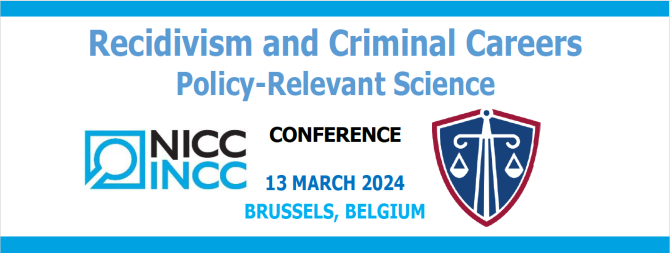

Official website : https://incc.fgov.be/CReCC-2024
International experts will zoom in on scientific research about recidivism and criminal careers and its relevance for policy-making and practice in criminal justice (and beyond).
Join us for an in-depth exploration of critical topics and networking opportunities with potential partners.
Discover the research agenda of the newly established Research Unit on Recidivism and Criminal Careers of the NICC.
VENUE
Pacheco Conference Room — Finance Tower Pachécolaan / Boulevard Pachéco 13 1000 BrusselsORGANISATION
National Institute of Criminalistics and Criminology
BELGIUM
REGISTRATION
Mandatory and before 1st of March 2024
(limited number of seats)
REGISTRATION FORM :
| 9.00 | - | 9.30 | WELCOME | (coffee) | |
| 9.40 | - | 10.00 | Introductory speech |
Paul VAN TIGCHELT |
(Federal Minister of Justice) |
| 10.00 | - | 10.15 | Introduction to the conference |
Pierre VAN RENTERGHEM |
(Director-General of the NICC) |
|
PART I |
|||||
| 10.15 | - | 11.00 | Win Some, Lose Some: Successes and Challenges Using Scientific Research to Inform Criminal Justice Policy Decisions |
Alex R. PIQUERO |
(University of Miami, U.S.A.) |
| 11.00 | - | 11.30 | COFFEE BREAK | ||
| 11.30 | - | 12.10 | The Person-Environment Interaction in Development and Action: Implications for Understanding and Preventing Crime |
Kyle H. TREIBER |
(Cambridge University, U.K.) |
| 12.10 | - | 12.50 | How Can Desistance Research Inform Criminal Justice Policy and Practice? |
Lila KAZEMIAN |
(John Jay College, New York University, U.S.A.) |
| 12.50 | - | 14.00 | LUNCH BREAK | ||
|
PART II |
|||||
| 14.00 | - | 14.40 | The Dutch Recidivism Monitor: History, Research and Applications for Judicial Practice and Policy |
Nikolaj TOLLENAAR |
(WODC, The Netherlands) |
| 14.40 | - | 15.20 | Using Linked Administrative Data to Inform Criminal Policy – Lessons From Finland |
Mikko AALTONEN |
(Eastern Finland University, Finland) |
| 15.20 | - | 15.35 | Recidivism and Criminal Career Research in Belgium: A Research Agenda | Research Unit on Recidivism and Criminal Careers (NICC) | |
| 15.35 | - | 16.00 | Q & A | ||
| 16.00 | - | 16.15 | Closing Remarks | ||
| 16.15 | RECEPTION |
DOCUMENTATION
Download the PDF file :
Conference Recidivism and Criminal Careers 2024.pdf